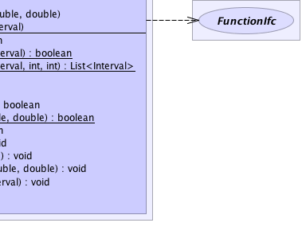

jsl.utilities.math.DBHIterativeProcess
jsl.utilities.math.FunctionalIterator
jsl.utilities.rootfinding.RootFinder
jsl.utilities.math.DBHIterativeProcess
jsl.utilities.math.FunctionalIterator
jsl.utilities.rootfinding.RootFinder
|
||||||||||
| PREV CLASS NEXT CLASS | FRAMES NO FRAMES | |||||||||
| SUMMARY: NESTED | FIELD | CONSTR | METHOD | DETAIL: FIELD | CONSTR | METHOD | |||||||||
java.lang.Object
public abstract class RootFinder
|  |
| Field Summary | |
|---|---|
protected double |
fNeg
The value of the function at xNeg |
protected double |
fPos
The value of the function at xPos |
protected double |
myInitialPt
The initial point for the search |
protected Interval |
myInterval
The interval for the search |
protected static int |
numIterations
Used in the static methods for finding intervals |
protected static double |
searchFactor
used in the static methods for finding intervals |
protected double |
xNeg
Value at which the function's value is negative. |
protected double |
xPos
Value at which the function's value is positive. |
| Fields inherited from class jsl.utilities.math.FunctionalIterator |
|---|
f, result |
| Constructor Summary | |
|---|---|
RootFinder()
|
|
RootFinder(FunctionIfc func,
double xLower,
double xUpper)
|
|
RootFinder(FunctionIfc func,
Interval interval)
|
|
| Method Summary | |
|---|---|
boolean |
contains(double x)
Checks to see if the the supplied point is within the search interval |
static boolean |
findInterval(FunctionIfc func,
Interval interval)
Using the supplied function and the initial interval provided, try to find a bracketing interval by expanding the interval outward |
static java.util.List<Interval> |
findInterval(FunctionIfc func,
Interval interval,
int n,
int nmax)
Given a function and a starting interval, subdivide the interval into n subintervals and attempt to find nmax bracketing intervals that contain roots |
double |
getLowerLimit()
The lower limit for the search interval |
double |
getUpperLimit()
The upper limit for the search interval |
boolean |
hasRoot(double xLower,
double xUpper)
Returns true if the supplied interval contains a root |
static boolean |
hasRoot(FunctionIfc func,
double xLower,
double xUpper)
Returns true if the supplied interval contains a root |
boolean |
hasRoot(Interval interval)
Returns true if the supplied interval contains a root |
void |
setInitialPoint(double initialPt)
Sets the initial starting point for the search. |
void |
setInterval(double xLower,
double xUpper)
Sets the bracketing interval within which the root should be found. |
void |
setInterval(FunctionIfc func,
double xLower,
double xUpper)
Sets the bracketing interval within which the root should be found. |
void |
setInterval(FunctionIfc func,
Interval interval)
Sets the bracketing interval within which the root should be found. |
void |
setInterval(Interval interval)
Sets the search interval for the search |
java.lang.String |
toString()
Returns a String representation of the finder |
| Methods inherited from class jsl.utilities.math.FunctionalIterator |
|---|
getResult, relativePrecision, setFunction |
| Methods inherited from class jsl.utilities.math.DBHIterativeProcess |
|---|
evaluate, evaluateIteration, finalizeIterations, getDesiredPrecision, getIterations, getMaximumIterations, getPrecision, hasConverged, initializeIterations, relativePrecision, setDesiredPrecision, setMaximumIterations |
| Methods inherited from class java.lang.Object |
|---|
clone, equals, finalize, getClass, hashCode, notify, notifyAll, wait, wait, wait |
| Field Detail |
|---|
protected double xNeg
protected double xPos
protected double fNeg
protected double fPos
protected Interval myInterval
protected double myInitialPt
protected static int numIterations
protected static double searchFactor
| Constructor Detail |
|---|
public RootFinder()
public RootFinder(FunctionIfc func,
Interval interval)
public RootFinder(FunctionIfc func,
double xLower,
double xUpper)
| Method Detail |
|---|
public java.lang.String toString()
toString in class java.lang.Objectpublic final boolean hasRoot(Interval interval)
interval -
public boolean hasRoot(double xLower,
double xUpper)
xLower - xUpper -
public static boolean hasRoot(FunctionIfc func,
double xLower,
double xUpper)
func - xLower - xUpper -
public static boolean findInterval(FunctionIfc func,
Interval interval)
func - interval -
public static java.util.List<Interval> findInterval(FunctionIfc func,
Interval interval,
int n,
int nmax)
func - interval - n - nmax -
public final void setInterval(Interval interval)
interval -
public void setInterval(double xLower,
double xUpper)
xLower - xUpper - public void setInitialPoint(double initialPt)
initialPt - public final boolean contains(double x)
x -
jsl.utilities.optimize.rootfinding.Interval#contains(double)public final double getLowerLimit()
jsl.utilities.optimize.rootfinding.Interval#getLowerLimit()public final double getUpperLimit()
jsl.utilities.optimize.rootfinding.Interval#getUpperLimit()
public final void setInterval(FunctionIfc func,
Interval interval)
func - interval -
public final void setInterval(FunctionIfc func,
double xLower,
double xUpper)
func - Sets the function to be evaluated, must not be nullxLower - xUpper -
|
||||||||||
| PREV CLASS NEXT CLASS | FRAMES NO FRAMES | |||||||||
| SUMMARY: NESTED | FIELD | CONSTR | METHOD | DETAIL: FIELD | CONSTR | METHOD | |||||||||